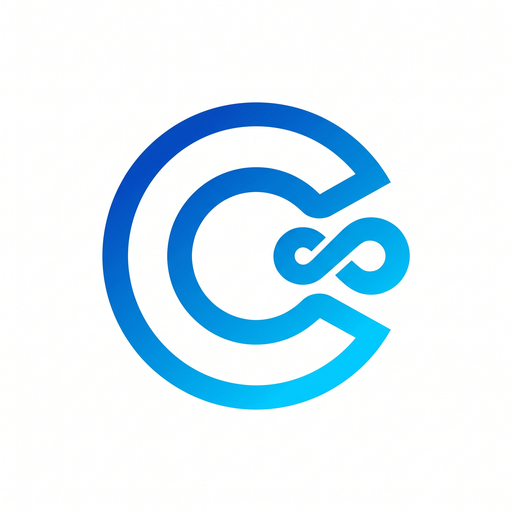

No. 1
クリニック・店舗DX
サービス提供中
CONNECT（コネクト）
24時間AI即レス予約 ＆ 顧客・スタッフ管理システム
歯科医院をはじめ、接骨院・サロン・パーソナルジムなど幅広い業種に対応する次世代予約・顧客管理システム。 LINE・WebからAIが24時間365日即時レスポンスで患者・顧客の予約受付や日時変更を自動化し、スタッフ別のタイムラインカレンダーに即時反映。 QR受付や電子カルテ・問診連携により、電話対応の手間と二重予約リスクを大幅に削減します。
主な特長・機能
- LINE / Web両対応の24時間AI自動予約
- スタッフ別タイムラインカレンダー＆シフト連動
- スマホQR来院受付 ＆ 顧客カルテ連携
- 即時SMS/メール通知・リマインド配信
Tech: React / Vite / Tailwind CSS / Supabase / LINE LIFF